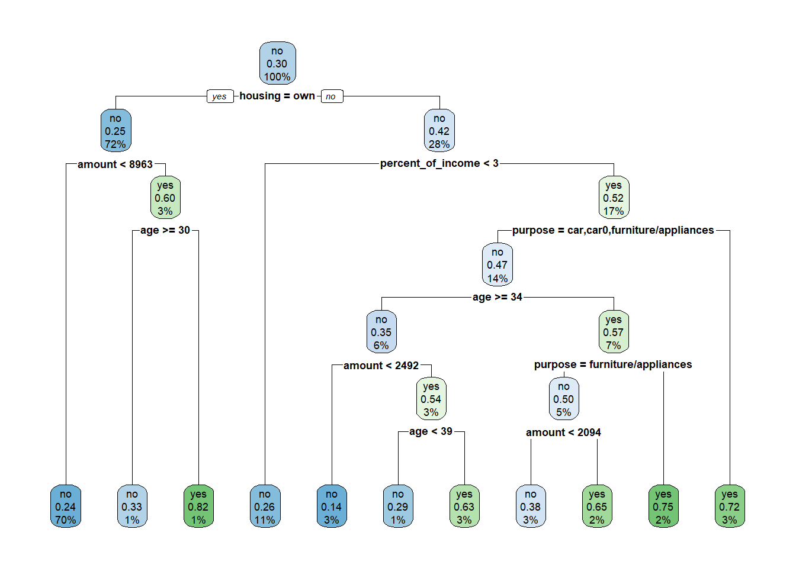

Code
library(tidyverse)
library(rpart) # funksjoner for CART
library(rpart.plot) # funksjon for å plotte CART
library(caret) # inneholder funksjon for confusion matrix
library(skimr) # funksjonen skim()library(tidyverse)
library(rpart) # funksjoner for CART
library(rpart.plot) # funksjon for å plotte CART
library(caret) # inneholder funksjon for confusion matrix
library(skimr) # funksjonen skim()Vi skal her bruke datasettet credit fra Canvas. Dataene er en banks kundehistorikk for kreditt for 1000 kunder. Variabelen default1 er «yes» hvis tilbakebetaling som avtalt og «no» hvis ikke. Dette er utfallsvariabelen. Øvrige variable er rimelig selvforklarende etter variabelnavn. Målet er å lage et system for hvilke nye kunder som skal få innvilget kreditt.
credit <- read.csv("../data/credit.csv", stringsAsFactors = TRUE)
skim(credit)| Name | credit |
| Number of rows | 1000 |
| Number of columns | 17 |
| _______________________ | |
| Column type frequency: | |
| factor | 10 |
| numeric | 7 |
| ________________________ | |
| Group variables | None |
Variable type: factor
| skim_variable | n_missing | complete_rate | ordered | n_unique | top_counts |
|---|---|---|---|---|---|
| checking_balance | 0 | 1 | FALSE | 4 | unk: 394, < 0: 274, 1 -: 269, > 2: 63 |
| credit_history | 0 | 1 | FALSE | 5 | goo: 530, cri: 293, poo: 88, ver: 49 |
| purpose | 0 | 1 | FALSE | 6 | fur: 473, car: 337, bus: 97, edu: 59 |
| savings_balance | 0 | 1 | FALSE | 5 | < 1: 603, unk: 183, 100: 103, 500: 63 |
| employment_duration | 0 | 1 | FALSE | 5 | 1 -: 339, > 7: 253, 4 -: 174, < 1: 172 |
| other_credit | 0 | 1 | FALSE | 3 | non: 814, ban: 139, sto: 47 |
| housing | 0 | 1 | FALSE | 3 | own: 713, ren: 179, oth: 108 |
| job | 0 | 1 | FALSE | 4 | ski: 630, uns: 200, man: 148, une: 22 |
| phone | 0 | 1 | FALSE | 2 | no: 596, yes: 404 |
| default | 0 | 1 | FALSE | 2 | no: 700, yes: 300 |
Variable type: numeric
| skim_variable | n_missing | complete_rate | mean | sd | p0 | p25 | p50 | p75 | p100 | hist |
|---|---|---|---|---|---|---|---|---|---|---|
| months_loan_duration | 0 | 1 | 20.90 | 12.06 | 4 | 12.0 | 18.0 | 24.00 | 72 | ▇▇▂▁▁ |
| amount | 0 | 1 | 3271.26 | 2822.74 | 250 | 1365.5 | 2319.5 | 3972.25 | 18424 | ▇▂▁▁▁ |
| percent_of_income | 0 | 1 | 2.97 | 1.12 | 1 | 2.0 | 3.0 | 4.00 | 4 | ▂▃▁▂▇ |
| years_at_residence | 0 | 1 | 2.85 | 1.10 | 1 | 2.0 | 3.0 | 4.00 | 4 | ▂▆▁▃▇ |
| age | 0 | 1 | 35.55 | 11.38 | 19 | 27.0 | 33.0 | 42.00 | 75 | ▇▆▃▁▁ |
| existing_loans_count | 0 | 1 | 1.41 | 0.58 | 1 | 1.0 | 1.0 | 2.00 | 4 | ▇▅▁▁▁ |
| dependents | 0 | 1 | 1.16 | 0.36 | 1 | 1.0 | 1.0 | 1.00 | 2 | ▇▁▁▁▂ |
Vi splitter først datasettet i to deler: en til training og en til testing.
grense <- 0.7
lottery <- runif(n = nrow(credit))
training <- filter(credit, lottery < grense)
testing <- filter(credit, lottery >= grense)Vi starter med å inkludere noen få variable som gir en oversiktlig illustrasjon. Utfallsvariabel og prediktorer spesifiseres som en formel på samme måte som for regresjon. Siden vi her har en klassifikasjon må vi spesifisere method = "class". Hvis ikke vil rpart() gjette hva slags modell (som kanskje er riktig), så du kan få andre resultater enn du forventet.
credit_tree <- rpart(default ~ age + amount + percent_of_income + purpose + employment_duration + housing,
data=training, method="class")
rpart.plot(credit_tree)
Vi kan også få printet ut disse som tall i en tabell.
rpart.rules(credit_tree, extra=4) default no yes
no [1.00 .00] when amount is 3450 to 4076 & employment_duration is < 1 year or unemployed
no [.80 .20] when amount < 4076 & employment_duration is > 7 years or 1 - 4 years or 4 - 7 years
no [.76 .24] when amount >= 4076 & age is 30 to 47 & percent_of_income >= 2
no [.74 .26] when amount < 3450 & age >= 34 & employment_duration is < 1 year or unemployed
no [.68 .32] when amount is 4076 to 8631 & age < 30 & percent_of_income < 3
no [.65 .35] when amount < 2751 & age < 34 & employment_duration is < 1 year or unemployed & purpose is business or furniture/appliances or renovations
yes [.38 .62] when amount >= 4076 & age is 30 to 47 & percent_of_income < 2
yes [.38 .62] when amount >= 4076 & age >= 47
yes [.29 .71] when amount is 4076 to 8631 & age < 30 & percent_of_income >= 3
yes [.29 .71] when amount is 2751 to 3450 & age < 34 & employment_duration is < 1 year or unemployed & purpose is business or furniture/appliances or renovations
yes [.27 .73] when amount < 3450 & age < 34 & employment_duration is < 1 year or unemployed & purpose is car or education
yes [.08 .92] when amount >= 8631 & age < 30 Vi kan så skrive ut confusion matrix.
rpart_class <- predict(credit_tree, type="class")
table(rpart_class, training$default)
rpart_class no yes
no 454 126
yes 30 73confusionMatrix(rpart_class, training$default)Confusion Matrix and Statistics
Reference
Prediction no yes
no 454 126
yes 30 73
Accuracy : 0.7716
95% CI : (0.7382, 0.8026)
No Information Rate : 0.7086
P-Value [Acc > NIR] : 0.000127
Kappa : 0.3553
Mcnemar's Test P-Value : 2.825e-14
Sensitivity : 0.9380
Specificity : 0.3668
Pos Pred Value : 0.7828
Neg Pred Value : 0.7087
Prevalence : 0.7086
Detection Rate : 0.6647
Detection Prevalence : 0.8492
Balanced Accuracy : 0.6524
'Positive' Class : no
rpart_test <- predict(credit_tree, newdata=testing, type="class")
confusionMatrix(rpart_test, testing$default)Confusion Matrix and Statistics
Reference
Prediction no yes
no 175 79
yes 41 22
Accuracy : 0.6215
95% CI : (0.5655, 0.6751)
No Information Rate : 0.6814
P-Value [Acc > NIR] : 0.9898738
Kappa : 0.0311
Mcnemar's Test P-Value : 0.0007312
Sensitivity : 0.8102
Specificity : 0.2178
Pos Pred Value : 0.6890
Neg Pred Value : 0.3492
Prevalence : 0.6814
Detection Rate : 0.5521
Detection Prevalence : 0.8013
Balanced Accuracy : 0.5140
'Positive' Class : no
Exercise 5.1 Gjenta oppgave 1, men basert på dine vurderinger i e) se om du klarer å tune modellen mer i retning av ønsket cost-ratio. Bruk argumentene prior, cp, minbucket og maxdepth.
Exercise 5.2 Bruk datasettet credit til å predikere kredittverdighet for nye kunder.
Exercise 5.3 Datafilen credit_kunder.csv inneholder data om to lånesøkere: Ola Normann og Kari Hansen.
Skal banken gi dem lån? Bruk foretrukne modell fra forrige oppgave.
Exercise 5.4 Banker bruker slike systemer i dag i større eller mindre grad til automatisere behandling av lånesøknader. (Men de bruker både rikere data og mer avanserte algoritmer). I hvilken grad synes du slike systemer kan/bør helautomatiseres? Bør det være reguleringer på hva slags data som benyttes til slike systemer? Bør kunden få innsyn i algoritmen ved avslag? Gi noen vurderinger av mulige fordeler og ulemper med tanke på hvordan det kan slå ut for enkeltindivider.
Begrepet “default” på engelsk kan bety å ikke holde en forpliktelse, men i software kan det bety forhåndsvalg. Dette kan være forvirrende akkurat her. Du kan godt endre variabelnavnet hvis du vil.↩︎